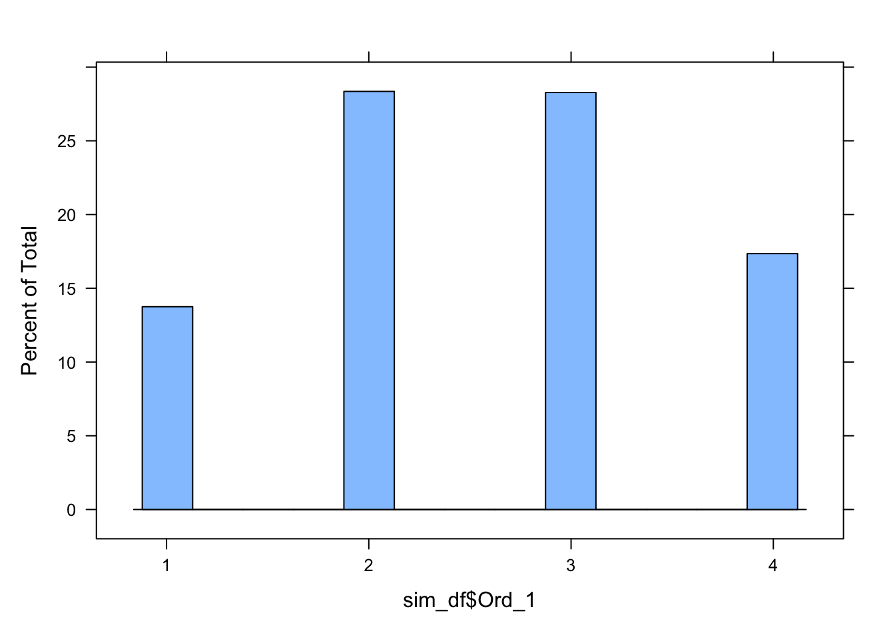
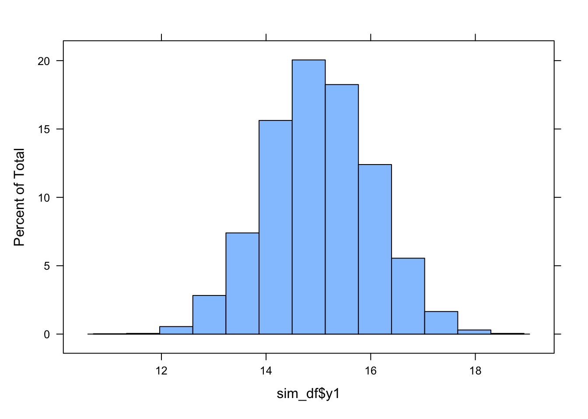
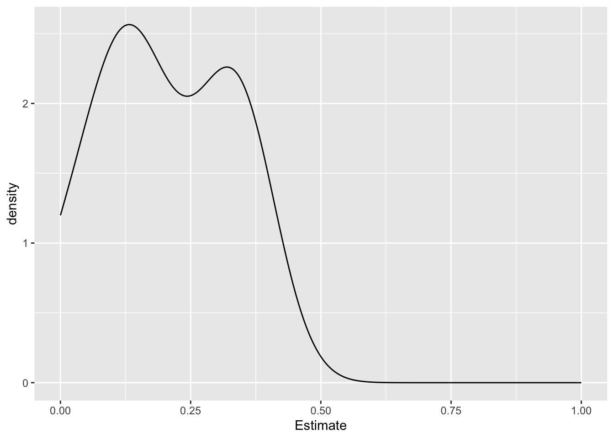
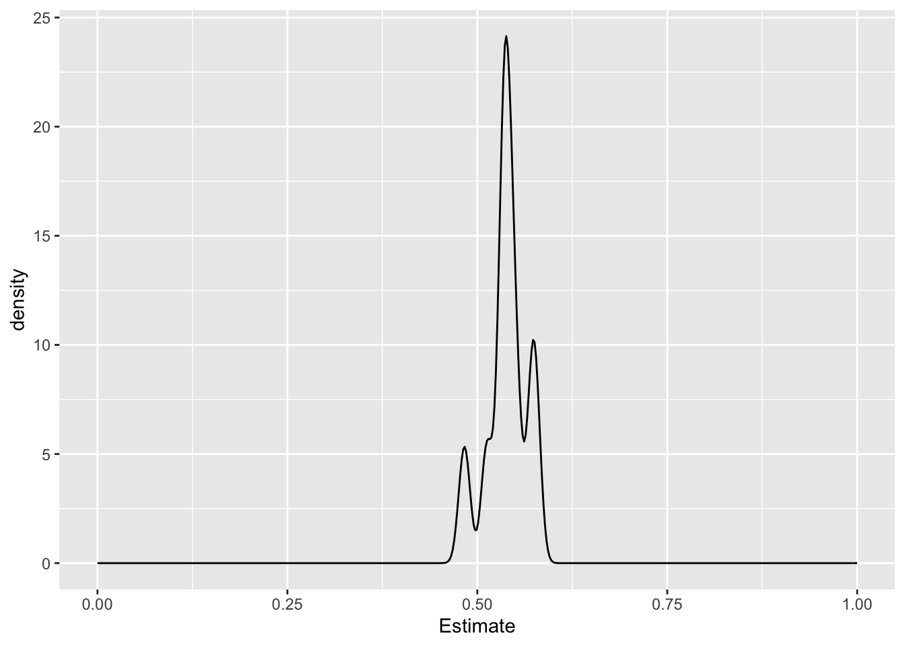

Automating the Hermine Interval ACE procedure
Loading packages and sourcing my BG helpers
library(BGmisc)
library(ggplot2)## Warning: package 'ggplot2' was built under R version 4.5.2library(ggpedigree)## Warning: package 'ggpedigree' was built under R version 4.5.2library(OpenMx)
library(EasyMx)
library(ACEsimFit)
library(tidyr)## Warning: package 'tidyr' was built under R version 4.5.2library(dplyr)## Warning: package 'dplyr' was built under R version 4.5.2library(purrr)## Warning: package 'purrr' was built under R version 4.5.2library(polycor)
library(lattice)
source("/Users/caileyfay/Documents/Research/Github/risky_gambling/helpers.R")
source("/Users/caileyfay/Documents/Research/Github/risky_gambling/EasyMx/R/emxBehaviorGenetics.R")
source("/Users/caileyfay/Documents/Research/Github/risky_gambling/data/miFunctions.R")First I create some simulated data to work on
sim <- Sim_Fit(
GroupNames = c("KinPair1", "KinPair2"),
GroupSizes = c(2000, 2000),
nIter = 10,
SSeed = 2,
GroupRel = c(.5, 0.25),
GroupR_c = c(1, 1),
mu = c(15, 15), #can I assume that the means for both groups are the same, even though they are slightly different in reality
ace1 = c(.3, .2, .5),
ace2 = c(.3, .2, .5),
ifComb = FALSE,
lbound = FALSE,
saveRaw = TRUE
)
# Convert the results element to a dataframe
# sim_df1 <- as.data.frame(sim$Iteration1$data)
# sim_df2 <- as.data.frame(sim$Iteration2$data)
# sim_df3 <- as.data.frame(sim$Iteration3$data)
# sim_df4 <- as.data.frame(sim$Iteration4$data)
# sim_df5 <- as.data.frame(sim$Iteration5$data)
# sim_df6 <- as.data.frame(sim$Iteration6$data)
# sim_df7 <- as.data.frame(sim$Iteration7$data)
# sim_df8 <- as.data.frame(sim$Iteration8$data)
# sim_df9 <- as.data.frame(sim$Iteration9$data)
# sim_df10 <- as.data.frame(sim$Iteration10$data)
#figuring out how to do it more efficiently, less copy paste nonesense
#nah this is annoying
#sim is a list. I want it to do something so its for every iteration in the sim list, create a data frame and label it sim_df1 .... sim_dfi
#ok turns out its not that hard with the map function
df_list <- map(sim, ~ as.data.frame(.x$data))
#list2env(df_list, envir = .GlobalEnv)The next step is to make it plausible for drug initation data - that means some people need to have NAs to represent non-use. I also have to make this into a loop or something more efficient. The goal is to scale it up so that when I do the bigger simulations for the BGA poster I have tricks to save myself work
for (i in 1:length(df_list)) {
df_list[[i]] <- df_list[[i]] %>%
mutate(y1 = case_when(
R == .5 ~ ifelse(runif(n()) < 0.20, NA, y1),
R == .25 ~ ifelse(runif(n()) < 0.10, NA, y1))) %>%
mutate(y2 = case_when(
is.na(y1) ~ NA,
TRUE ~ y2
)) %>%
mutate(Ord_1 = case_when(
y1 <= 14 ~ 1,
y1 <= 15 ~ 2,
y1 <= 16 ~ 3,
y1 >= 17 ~ 4,
is.na(y1) ~ 4,
),
Ord_2 = case_when(
y2 <= 14 ~ 1,
y2 <= 15 ~ 2,
y2 <= 16 ~ 3,
y2 >= 17 ~ 4,
is.na(y2) ~ 4,
)) %>%
mutate(RCoef = R)
}
list2env(df_list, envir = .GlobalEnv)## <environment: R_GlobalEnv>Traditional way of getting an Ordinal Ace from sim_df
sim_df <- Iteration1 #relic of past naming convention but too much work to change across files at this point
source("/Users/caileyfay/Documents/Research/Github/risky_gambling/sim_df_ordinal_ACE.r")## Running oneACEvo with 11 parameters##
## Beginning initial fit attempt## Running oneACEvo with 11 parameters##
## Lowest minimum so far: 90714.0446590803##
## Beginning fit attempt 1 of at maximum 10 extra tries## Running oneACEvo with 11 parameters##
## Lowest minimum so far: 17156.5514226255##
## Beginning fit attempt 2 of at maximum 10 extra tries## Running oneACEvo with 11 parameters##
## Fit attempt worse than current best: 17156.5514440417 vs 17156.5514226255##
## Beginning fit attempt 3 of at maximum 10 extra tries## Running oneACEvo with 11 parameters##
## Fit attempt worse than current best: 17156.5514472358 vs 17156.5514226255##
## Beginning fit attempt 4 of at maximum 10 extra tries## Running oneACEvo with 11 parameters##
## Beginning fit attempt 5 of at maximum 10 extra tries## Running oneACEvo with 11 parameters##
## Lowest minimum so far: 17156.551422582##
## Beginning fit attempt 6 of at maximum 10 extra tries## Running oneACEvo with 11 parameters##
## Fit attempt worse than current best: 17156.5514552245 vs 17156.551422582##
## Beginning fit attempt 7 of at maximum 10 extra tries## Running oneACEvo with 11 parameters##
## Beginning fit attempt 8 of at maximum 10 extra tries## Running oneACEvo with 11 parameters##
## Beginning fit attempt 9 of at maximum 10 extra tries## Running oneACEvo with 11 parameters##
## Beginning fit attempt 10 of at maximum 10 extra tries## Running oneACEvo with 11 parameters##
## Retry limit reached##
## Solution found## Final run, for Hessian and/or standard errors and/or confidence intervals## Running oneACEvo with 11 parameters##
## Solution found! Final fit=17156.551 (started at 4280366) (11 attempt(s): 11 valid, 0 errors)## Start values from best fit:## -3,2.02415892915944,0.857688905622028,0.993097986029548,5.96049294897963,2.07890250137363,1.08964739207514,0.458139149749931,0.569315392612889,0.464550462230366,-0.0338658548432549## Mx:oneACEvo os=6983 ns=4000 ep=11 co=1 df=6972 ll=17156.5514 cpu=0.2046 opt=SLSQP ver=2.22.10 stc=0
## t1thFU t2thFU t3thFU t4thFU t5thFU t6thFU t7thFU t8thFU VA11 VC11 VE11
## -3.0000 2.0242 0.8577 0.9931 5.9605 2.0789 1.0896 0.4581 0.5693 0.4646 -0.0339
## lbound estimate ubound
## oneACEvo.US[1,1] NA 0.5693 NA
## oneACEvo.US[1,2] NA 0.4646 NA
## oneACEvo.US[1,3] NA -0.0339 NAsumACE## Summary of oneACEvo
##
## free parameters:
## name matrix row col Estimate Std.Error A lbound ubound
## 1 t1thFU thinG 1 1 -3.000000000 0.089970300 ! -3!
## 2 t2thFU thinG 2 1 2.024158929 0.089347716 0.001
## 3 t3thFU thinG 3 1 0.857688906 0.016733587 0.001
## 4 t4thFU thinG 4 1 0.993097986 0.017842567 0.001
## 5 t5thFU thinG 5 1 5.960492949 0.142867020 0.001
## 6 t6thFU thinG 6 1 2.078902501 0.049829134 0.001
## 7 t7thFU thinG 7 1 1.089647392 0.026117717 0.001
## 8 t8thFU thinG 8 1 0.458139150 0.023968962 0.001
## 9 VA11 VA 1 1 0.569315393 0.050035512 !
## 10 VC11 VC 1 1 0.464550462 0.024188526 !
## 11 VE11 VE 1 1 -0.033865855 0.030275944 !
##
## confidence intervals:
## lbound estimate ubound note
## oneACEvo.US[1,1] NA 0.569315393 NA !!!
## oneACEvo.US[1,2] NA 0.464550462 NA !!!
## oneACEvo.US[1,3] NA -0.033875855 NA !!!
## To investigate missing CIs, run summary() again, with verbose=T, to see CI details.
##
## Model Statistics:
## | Parameters | Degrees of Freedom | Fit (-2lnL units)
## Model: 11 6972 17156.551
## Saturated: NA NA NA
## Independence: NA NA NA
## Number of observations/statistics: 4000/6983
##
## Constraint 'Var1' contributes 1 observed statistic.
##
## Information Criteria:
## | df Penalty | Parameters Penalty | Sample-Size Adjusted
## AIC: 3212.5514 17178.551 17178.618
## BIC: -40669.5627 17247.786 17212.833
## To get additional fit indices, see help(mxRefModels)
## timestamp: 2026-04-26 11:44:09
## Wall clock time: 0.20461297 secs
## optimizer: SLSQP
## OpenMx version number: 2.22.10
## Need help? See help(mxSummary)table(sim_df$Ord_1)##
## 1 2 3 4
## 550 1134 1131 694table(sim_df$Ord_2)##
## 1 2 3 4
## 544 1110 1136 683histogram(sim_df$Ord_1)
histogram(sim_df$y1)
Interval Ace
source("~/Documents/Research/Github/risky_gambling/sim_df_interval_ACE.r")## Running uniACEvc_R_x with 5 parameters## Running uniAEvc with 4 parameters## Running uniCEvc_ with 4 parameters## Running uniEvc_ with 3 parameterssumACE## Summary of uniACEvc_R_x
##
## free parameters:
## name matrix row col Estimate Std.Error A
## 1 meany1 meanG 1 1 15.01102566 0.017464619
## 2 meany2 meanG 1 2 15.01633050 0.017462359
## 3 VA11 VA 1 1 0.47181234 0.121972831
## 4 VC11 VC 1 1 0.15537817 0.049164100
## 5 VE11 VE 1 1 0.40990030 0.076536822
##
## confidence intervals:
## lbound estimate ubound note
## uniACEvc_R_x.US[1,1] 0.232975539 0.47181234 0.71344794
## uniACEvc_R_x.US[1,2] 0.058159718 0.15537817 0.25133387
## uniACEvc_R_x.US[1,3] 0.261268509 0.40990030 0.56227104
##
## Model Statistics:
## | Parameters | Degrees of Freedom | Fit (-2lnL units)
## Model: 5 6773 19109.7
## Saturated: NA NA NA
## Independence: NA NA NA
## Number of observations/statistics: 3389/6778
##
## Information Criteria:
## | df Penalty | Parameters Penalty | Sample-Size Adjusted
## AIC: 5563.7002 19119.700 19119.718
## BIC: -35943.2091 19150.342 19134.454
## To get additional fit indices, see help(mxRefModels)
## timestamp: 2026-04-26 11:44:09
## Wall clock time: 0.041461945 secs
## optimizer: SLSQP
## OpenMx version number: 2.22.10
## Need help? See help(mxSummary)ACE with easymx - emxTwinModel function already modified
model <- emxTwinModel(model="Cholesky", relatedness ='RCoef', data=Iteration1, run=TRUE, use=c('y1','y2'), name='model', components='ACE')## Running model with 4 parameterssummary(model)## Summary of model
##
## free parameters:
## name matrix row col Estimate Std.Error A lbound ubound
## 1 sqrtA11 sqrtA 1 1 0.34482336 0.086009050 1e-06
## 2 sqrtC11 sqrtC 1 1 0.53500377 0.026356106 1e-06
## 3 sqrtE11 sqrtE 1 1 0.81377339 0.017196599 1e-06
## 4 My1 Means y1 1 15.01422238 0.014197036
##
## Model Statistics:
## | Parameters | Degrees of Freedom | Fit (-2lnL units)
## Model: 4 6774 19120.684
## Saturated: 5 6773 NA
## Independence: 4 6774 NA
## Number of observations/statistics: 4000/6778
##
## Information Criteria:
## | df Penalty | Parameters Penalty | Sample-Size Adjusted
## AIC: 5572.6839 19128.684 19128.694
## BIC: -37063.2084 19153.860 19141.150
## To get additional fit indices, see help(mxRefModels)
## timestamp: 2026-04-26 11:44:09
## Wall clock time: 0.017212152 secs
## optimizer: SLSQP
## OpenMx version number: 2.22.10
## Need help? See help(mxSummary)Now I want to repeat this for the other 9 iterations
run_int <- function(df) {
model <- emxTwinModel(model="Cholesky", relatedness ='RCoef', data=df, run=TRUE, use=c('y1','y2'), name='model', components='ACE')
}
results <- lapply(df_list, run_int)## Running model with 4 parameters
## Running model with 4 parameters
## Running model with 4 parameters
## Running model with 4 parameters
## Running model with 4 parameters
## Running model with 4 parameters
## Running model with 4 parameters
## Running model with 4 parameters
## Running model with 4 parameters
## Running model with 4 parameters#now I have a big list of model outputs, but I can't do anything with it. I want means, parameters
R1 <- summary(results$Iteration1)
estimates_df1 <- R1$algebra
#now scale it up so I don't have to repeat manually ten times
#can't figure it out yet with lapply so I am going to for loop it
estimates_list <- lapply(results, function(fit) {
s <- summary(fit)
return(s$parameters)
})
#fuck it
R1 <- summary(results$Iteration1)
estimates_df1 <- R1$parameters
R2 <- summary(results$Iteration2)
estimates_df2 <- R2$parameters
R3 <- summary(results$Iteration3)
estimates_df3 <- R3$parameters
R4 <- summary(results$Iteration4)
estimates_df4 <- R4$parameters
R5 <- summary(results$Iteration5)
estimates_df5 <- R5$parameters
R6 <- summary(results$Iteration6)
estimates_df6 <- R6$parameters
R7 <- summary(results$Iteration7)
estimates_df7 <- R7$parameters
R8 <- summary(results$Iteration8)
estimates_df8 <- R8$parameters
R9 <- summary(results$Iteration9)
estimates_df9 <- R9$parameters
R10 <- summary(results$Iteration10)
estimates_df10 <- R10$parameters
#just in case I want to do something with this
eh <- rbind(estimates_df1,estimates_df2, estimates_df3, estimates_df4, estimates_df5, estimates_df6, estimates_df7, estimates_df8, estimates_df9, estimates_df10)
eh <- eh %>%
mutate(It = rep(1:10, each = 4))
A <- eh %>%
filter(name == "sqrtA11") #these need to be transformed so that they are actually the A ( or C or E ) so I atually probably need to approach this diffrently
C <-eh %>%
filter(name == "sqrtC11")
E <- eh %>%
filter(name == "sqrtE11")now that the parameters are workable, I want to graph them as 3 overlapping density distributions
ggplot(A, mapping = aes(x=Estimate)) +
geom_density() +
xlim(0, 1)
ggplot(C, mapping = aes(x=Estimate)) +
geom_density() +
xlim(0, 1)
ggplot(E, mapping = aes(x=Estimate)) +
geom_density() +
xlim(0, 1)
#Dubious
ggplot(eh, mapping = aes(x = Estimate, fill = name)) +
geom_density() +
xlim(0,1) +
scale_fill_brewer() +
theme_minimal()## Warning: Removed 10 rows containing non-finite outside the scale range (`stat_density()`).
Need to do the ordinal with easyMx - will need to modify the function
Trying out this function